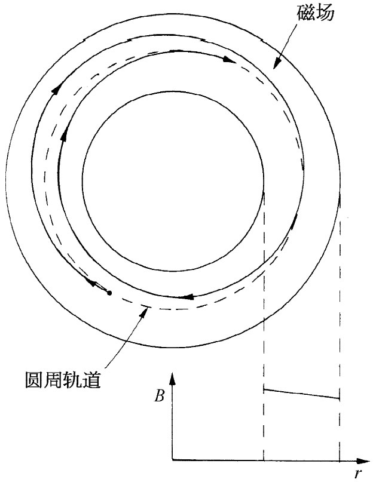
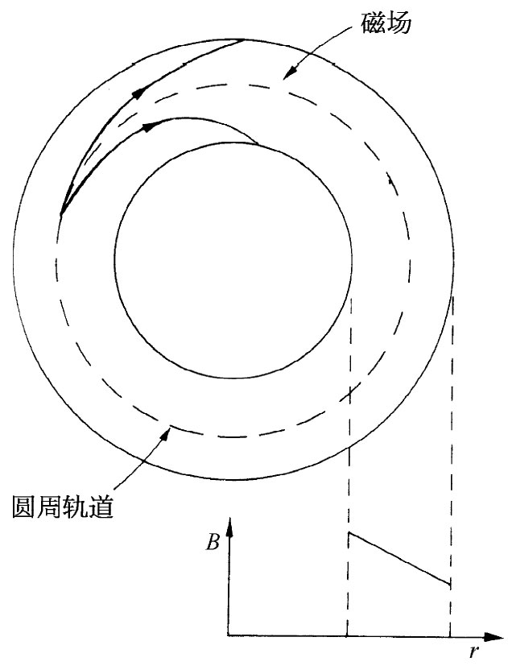
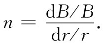

在高能粒子加速器中磁场也被用来产生特殊的粒子轨道。像回旋加速器和同步加速器那一类机器，会使粒子反复经过强电场而把它加速至高能。粒子被磁场保持在它们的循环轨道中。
我们已经见到，在匀强磁场中的粒子将在圆周轨道上运动。然而，这仅对于完全均匀的场才正确。试设想一个在很大范围几乎均匀、但在某一区域里会稍微强于其他区域里的B场。若把一个动量为p的粒子放置在这个场中，它便将在一个几乎圆形的轨道内运动，其半径为R=p/（qB）。然而，在场较强的区域里这轨道的曲率半径稍微小点。轨道不是一个闭合圆周，它但将在场中“漫步”，如图29-10所示。如果我们乐意的话，可以认为场里的这个小“误差”产生了一个附加的角度冲击，它把粒子送上一个新的轨道。如果粒子要在加速器中绕行几兆圈的话，则某一种能倾向于保持各轨道靠近某个设计轨道的“径向聚焦”是必需的。
图29-10 在一个稍微非均匀的磁场中粒子的运动
对于一个匀强场来说，另一种困难是粒子不会保持在一个平面内。如果它们以一微小角度开始——或通过场中的任一微小误差给予了一个小角度——它们便将跑一个螺旋路线而最终会闯进磁极或到达真空室里的天花板或地板上。必须做出某种安排来避免这种垂直方向的漂移，场必须同时提供“垂直方向聚焦”和径向聚焦。
最初，人们会猜测到，可以通过制造一个磁场来提供这种径向聚焦，而该磁场随着与设计路线中心的距离的增大而增强。于是，若有一粒子跑到较大的半径上去，它便将处于较强的磁场之中而被弯回到其正确的半径上来。如果它跑到了一个太小的半径，则弯曲程度将变小，因而又会朝设计的半径返回。一个粒子，一旦相对该理想圆周以某个角度开始运动，便将在该理想圆周轨道上左右摇摆，如图29-11所示。这种径向聚焦作用会把粒子保持在该圆周路径附近。
图29-11 在一个具有大的正斜率的磁场中粒子的径向运动
实际上，即使使用相反 的磁场斜率，也仍会有某种径向聚焦作用。只要轨道曲率半径的增大不会快过粒子与场中心的距离的增大，这种聚焦作用就可能发生。粒子的轨道将会如图29-12所示。然而，若场的梯度太大，则轨道将不会回到设计半径上来，而向内旋入或向外旋出，如图29-13所示。
|  |  |
| 图29-12 在一个具有小的负斜率的磁场中粒子的径向运动 | 图29-13 在一个具有大的负斜率的磁场中粒子的径向运动 |
我们通常用“相对梯度”或场指数 n来描述场的斜率：
 （29.2）
如果这个相对梯度大于-1，则导向场就能提供径向聚焦。
图29-14 从一个垂直于轨道的截面上来看一个垂直方向的导向场
一个径向的场梯度也将对粒子产生垂直方向 的力。假设有一个靠近轨道中心处较强而在外面较弱的场，那么垂直于轨道的、磁体的垂直方向截面也许会如图29-14所示（对于质子来说，它们的轨道应该是从页面出来）。如果左边的场比右边的较强，则磁场线必然如图所示的那样弯曲。通过应用自由空间里B的环流等于零的规律，我们可以明白情况必然会是这样。若我们选取如图所示的那些坐标，则
由于已假定∂Bz /∂x是负的，所以就必然存在一个相等的∂Bx /∂z。如果轨道的“标称”平面是一个Bx =0处的对称平面，则径向分量Bx 在这一个平面之上为负而在其下为正，场线就必须弯曲成如图所示的那个样子。
像这样的一个场将具有垂直方向的聚焦特性。试想象一个质子正在与中间轨道近乎平行但却在其上面运动，B的水平分量将对它施一向下的力。如果质子是在该中间轨道之下运动，则力会颠倒过来。因此，就有一个朝向该中间轨道的“恢复力”。根据我们的论证，将有一个垂直方向的聚焦作用，只要该垂直方向 场随半径的增大而减小。但如果这个场的梯度为正，则将有一“垂直方向的去焦”作用。因此，对于垂直方向聚焦来说，该场指数n必须小于零。上面我们已求得对于径向聚焦n必须大于-1，这两个条件结合在一起就给出总条件
-1＜n＜0，
若要把粒子维持在稳定的轨道上，则要满足上述条件。在回旋加速器中，常采用非常接近于零的n值，而在电子回旋加速器和同步加速器中，则一般采用n=-0.6的数值。